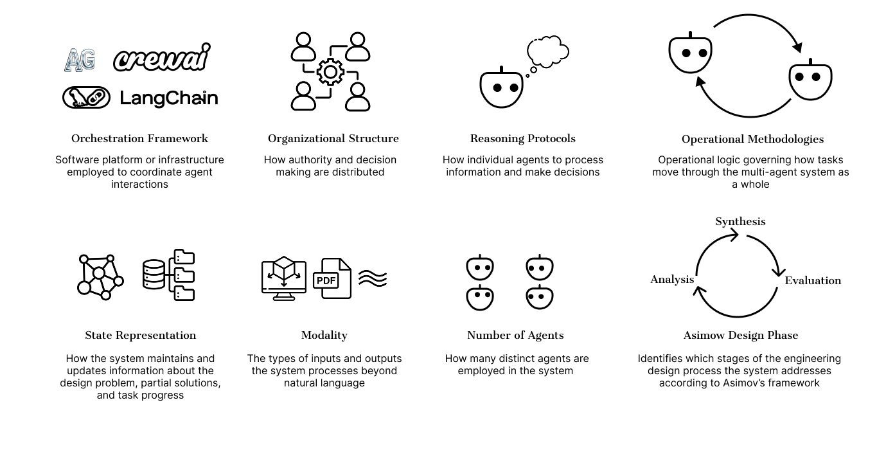
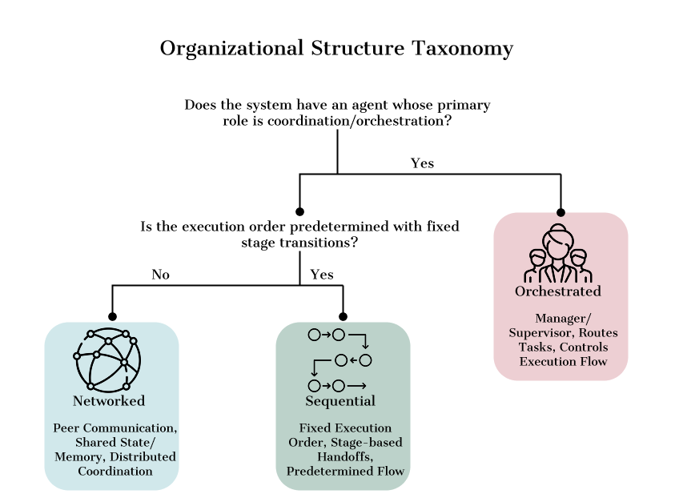
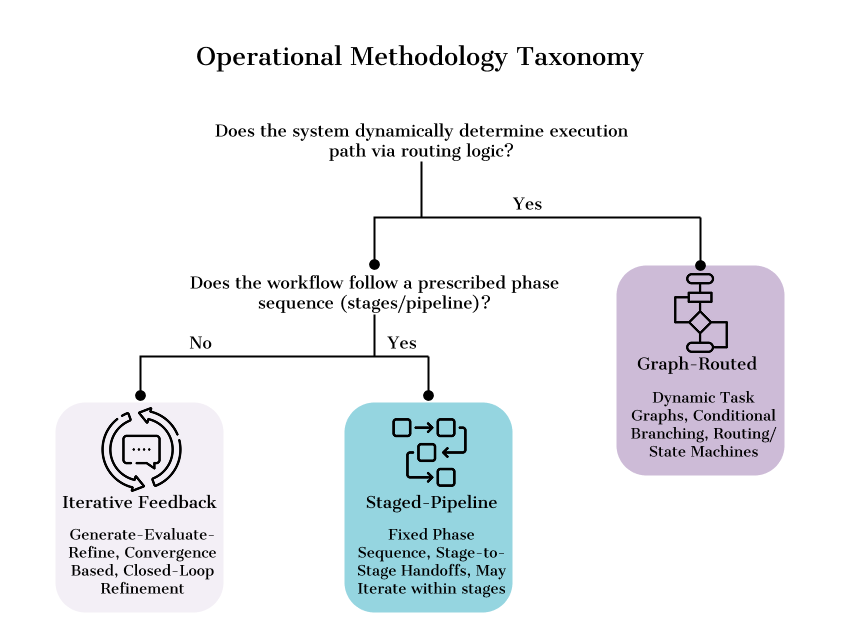

A Taxonomy and Characterization of Multi-Agent Engineering Systems Through Organizational Design Theory
Organizational design has established principles for coordinating human teamwork over more than a century. Large language models have enabled multi-agent systems (MAS) for engineering design that invoke organizational terminology like "hierarchical" or "collaborative," yet current implementations fail to engage organizational design theory, making systematic comparison difficult.
This paper characterizes thirty MAS frameworks using 8 attributes, then develops a taxonomy reducing organizational structures to three types (Orchestrated, Networked, Sequential) and operational methodologies to three patterns (Iterative-Feedback, Graph-Routed, Staged-Pipeline). Mapping these categories to organizational design theory, we show that each architecture invokes specific mechanisms: Orchestrated systems face span of control constraints, Networked systems require common ground establishment, and Sequential systems depend on modularity principles, yet current implementations engage these concepts without leveraging organizational research. Analysis reveals substantial fragmentation, with implementations ranging from 2 to 22 agents using various orchestration platforms. Our taxonomy provides foundations for systematic comparison and principled agent team design.
Each multi-agent system is characterized along 8 attributes spanning technical infrastructure and organizational design.

A manager or supervisor agent centralizes coordination and delegates execution.
Peer agents coordinate through shared state or messaging, with no central controller.
Agents execute in a predetermined pipeline with explicit stage-to-stage handoffs.
Repeated generate, evaluate, and refine cycles until convergence.
Next step chosen by routing logic, state machines, or conditional branching.
Fixed sequence of phases with prescribed transitions between stages.

Organizational structure decision tree.

Operational methodology decision tree.
@inproceedings{ezemba2026organizationally,
title = {Organizationally-Intelligent Agents: A Taxonomy and
Characterization of Multi-Agent Engineering Systems
Through Organizational Design Theory},
author = {Ezemba, Jessica and McComb, Christopher and Tucker, Conrad},
booktitle = {Design Computing and Cognition (DCC)},
year = {2026},
note = {Under review}
}